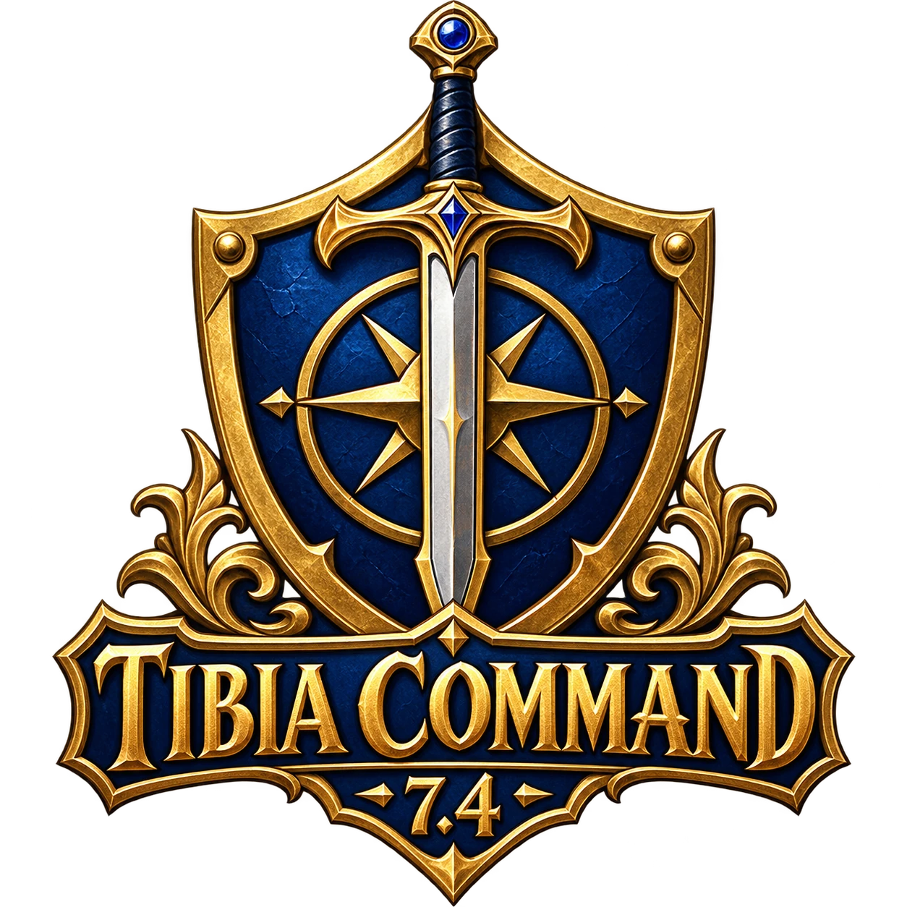
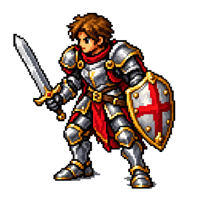

AO VIVOConsultando…
AO VIVOConsultando…STREAMER PARCEIRO

EDIÇÃO 7.4Conectando à comunidade…
AO VIVOConsultando… AO VIVOConsultando…
AO VIVOConsultando… AO VIVOConsultando…
AO VIVOConsultando… AO VIVOConsultando…
AO VIVOConsultando…Escolha um canal.
Para assistir nesta tela, abra o canal na Twitch.
Abrir canal na Twitch ↗TIBIA COMMAND · O CLÁSSICO CONTINUA
Do primeiro passo em Rookgaard à próxima grande quest. Encontre caminhos, conheça o mundo e prepare cada sessão no Tibia 7.4.
Feito pela comunidade, para quem vive o clássico.

LEVE SUA JORNADA PARA O WINDOWS
Organize personagens, registre hunts e rendimentos e acompanhe suas quests no nosso programa para Windows.